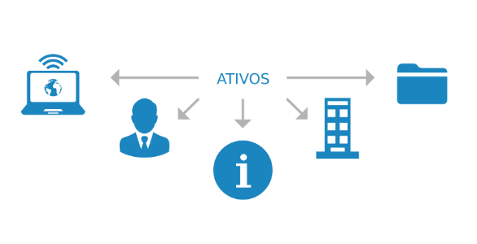
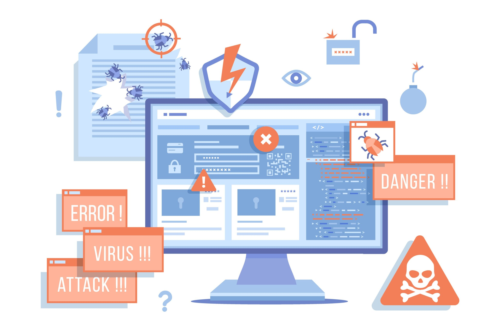

Segurança: Ativos, Ameaças e Requisitos
Oque é Segurança de Sistemas ?
A palavra segurança, no contexto de proteger, refere-se ao ato de defender; afastar algo ou alguém de uma ameaça ou perigo. Em termos empresariais, a segurança deve ser um facilitador de negócios, fazendo parte do dia-a-dia da organização. Os processos de segurança devem identificar mudanças no ambiente empresarial, identificando, avaliando e tratando vulnerabilidades e ameaças, equilibrando as necessidades operacionais e de segurança, para tanto, ela faz uso recursos de segurança, que quando combinados passam a se chamar sistema de segurança.
Segurança de sistemas ou tambem chamado de Segurança da informação é um conjunto de ações e boas práticas que têm como finalidade proteger um grupo de dados. De tal maneira, essas medidas de segurança podem ser aplicadas em todas as empresas que trabalham com dados, uma vez que toda organização gera informações próprias.Com a criação do Regulamento Geral Sobre Proteção de Dados na Europa, no ano de 2016, a segurança da informação passou a ser um ponto de grande importância e cuidado por parte das empresas que tratam dados de clientes. A segurança da informação é crucial se uma empresa deseja proteger todos os dados da instituição, um fator indispensável para o exercício de qualquer atividade empresarial.

Requisitos da Segurança de Sistemas?
A segurança da informação se baseia em quatro pilares que sustentam todas as medidas tomadas para garantir a proteção dos dados, que são:
Confidencialidade
A confidencialidade tem a ver com a privacidade dos dados da organização. Esse conceito se relaciona às ações tomadas para assegurar que informações confidenciais e críticas não sejam roubadas dos sistemas organizacionais por meio de ciberataques, espionagem, entre outras práticas.
Integridade
Integridade corresponde à preservação da precisão, consistência e confiabilidade das informações e sistemas pela empresa ao longo dos processos ou de seu ciclo de vida.É importante que os dados circulem ou sejam armazenados do mesmo modo como foram criados, sem que haja interferência externa para corrompê-los, comprometê-los ou danificá-los.
Autenticidade
A disponibilidade está relacionada ao tempo e à acessibilidade que se tem dos dados e sistemas da empresa, ou seja, se eles podem ser consultados a qualquer momento pelos colaboradores, alem que a autenticidade garante a veracidade do autor, de quem de fato produziu aquela informação, não importando se o conteúdo é verdadeiro ou falso.
Disponibilidade
A disponibilidade está relacionada ao tempo e à acessibilidade que se tem dos dados e sistemas da empresa, ou seja, se eles podem ser consultados a qualquer momento pelos colaboradores.A disponibilidade pode ser garantida de forma mais eficiente por meio da implantação de processos de manutenção rápida de hardwares e eliminação de conflitos de software graças à priorização de programas compatíveis. É essencial utilizar uma infraestrutura tecnológica voltada à manutenção e preservação do acesso aos dados.
Ativos
Podemos definir o que é um ativo em segurança da informação como um recurso corporativo que possui valor para a companhia e que deve ser protegido a partir de práticas e políticas que garantam a sua integridade, confidencialidade, disponibilidade e autenticidade. Considera-se como ativo de informação qualquer elemento informacional que represente valor para a empresa, como banco de dados, arquivos, documentos, contratos etc. Dessa forma, quando se fala em o que é um ativo em segurança da informação, esse dado pode ser um acesso com login e senha salvo em nuvem, como também informações sigilosas em um papel físico de uma pessoa, dispositivos para armazenamento físico, serviços de armazenamento na nuvem, peças de hardware, softwares antivírus, firewalls, servidores etc.
Classificação de Ativos
A classificação dos ativos de informação é uma das exigências presentes na norma ISO 27001 e tem como objetivo estabelecer níveis de proteção para os diferentes dados e informações que circulam na empresa. O comum é que os ativos sejam classificados por 4 categorias: Confidencial, Restrita, Uso interno e Pública, essas categorias são classificadas levando em consideração 4 requisitos Valor, Requisitos legais ,Criticidade e Sensibilidade.
Vulnerabilidades
A vulnerabilidade na segurança da informação se refere a situações que colocam a empresa em uma posição mais suscetível a ataques e ações mal-intencionadas. A norma ISO 27000 define as vulnerabilidades como fraquezas com potencial de serem exploradas por ameaças à segurança da informação. Tais vulnerabilidades podem ser:
Falta de treinamento dos colaboradores
Softwares desatualizados
Problemas na rede
Programas mal estruturados
Ausência de profissionais capacitados para lidar com a Segurança da Informação
Sistema de validação de dados ineficiente
Falta de políticas para proteção dos dados
Alem disso a pandemia trouxe à tona um problema: a falta de preparo de muitas empresas em relação à segurança da informação. O trabalho remoto já é uma realidade, mas foi preciso encarar uma adaptação rápida (e forçada, em muitos casos) ao home office enquanto lidávamos com o aumento da incidência de ataques. Agora é preciso estarmos preparados para enfrentar esses desafios do mundo digital, munidos das melhores soluções.
Todos essas vulnerabilidades podem ser resolvidas com politicas de segurança na empresa. Se não forem resolvidas podem levar para problemas mais sérios, pois as vulnerabilidades são as portas de entradas para ameaças como agentes maliciosos, ou ataques.
Ameaças
Podemos definir o que é uma ameaça em segurança da informação como qualquer fator ou ação capaz de interferir e causar danos à integridade, à confidencialidade, à autenticidade e à disponibilidades de dados e informações sobre a empresa. Mas nesse caso qual a diferença entre Vulnerabilidades e Ameaças. As ameaças estão ligadas a ações intencionais ou acidentais que buscam e exploram vulnerabilidades. As ameaças a determinados ativos de informação se concretizam por meio das vulnerabilidades, fraquezas e lacunas na segurança.
